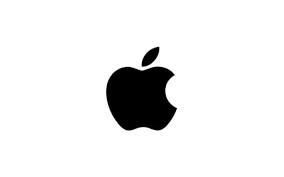

IPhone vs. Android: The Debate
The debate between Apple and Android products
has been going on for over a decade. Each has a number of characteristics that will be important in making a decision in selecting one or the other. This website
will explain the pros and the cons of each product and examine
the major differences between the two, so that you can decide
which you would like to choose!

The IPhone
Pros:
- Simpler User Interface
- Smoother Operation
- Continuity with other Products
Apple's iconic smartphones have been stable, trusted, and innovative for decades, making them a good choice of smartphone.
Cons:
- Limited customization options
- More expensive (on average)
- Poorer camera quality

Android
Pros:
- Extensive customization options
- Access to more apps
- Better camera quality
Android's endless number of options means that you will be able to find a great choice for whatever you are looking for, whether price, quality, or utility.
Cons:
- Complexity
- Worse support
- Possibility of malware
Side by Side Comparison
| Comparison | Apple | Android |
|---|---|---|
| OS: | iOS | Android |
| Camera: | Worse pictures | Better pictures |
| Software: | Consistent Updates | Updates take longer |
| Downloads | App Store | Play Store and Third Party |
| Manufacturer Compatibility: | Seamless | Problematic at times |
To see more statistics click here!